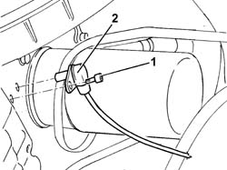
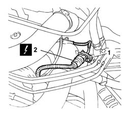
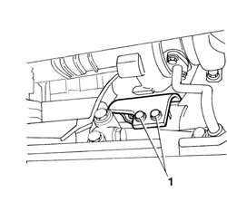
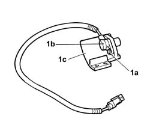
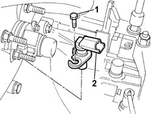

1060G20 RPM AND TIMING SENSOR - R R
- Path
- Procedures > 10 ENGINE UNIT > 1060 DIESEL INJECTION SYSTEM > 1060G PRESSURE PUMP ELECTRIC CONTROL > 1060G20 RPM AND TIMING SENSOR - R R
- Kind
- repair procedure (removal / refitting; the operation number is the code)
- Applies to
- engines: 2.0 JTD 8V, 2.3 JTD 16V, 2.8 JTD 8V; all production periods
- Interactive page
- https://sloeber94.github.io/elrnDB-fDct/en/#/244000847
Applies to: engines: 2.3 JTD 16V; all production periods
 Removing
Removing
 Refitting
Refitting- Disconnect the negative battery terminal.
Op. 7055B54 UNDER-ENGINE GUARD - R R
1. Disconnect the electrical connection for the rpm sensor.
 | Description | Connector |
|---|---|---|
Rpm sensor | K046 |
1. Undo the bolt fixing the rpm sensor.
2. Remove the rpm sensor from the housing in the cylinder block/crankcase.

Applies to: engines: 2.3 JTD 16V; all production periods
Refitting
Removing- Fit the rpm sensor in the special housing and tighten the fixing bolt.
- Connect the electrical connection for the rpm sensor.
| Description | Connector |
|---|---|---|
. | Rpm sensor | K046 |
Op. 7055B54 UNDER-ENGINE GUARD - R R
- Connect the negative battery terminal.
Applies to: engines: 2.8 JTD 8V; all production periods
Removing
Refitting- Position the vehicle on the lift.
1. Open the fastening spring.
2. Disconnect the electrical connection.
| Description | Connector |
|---|---|---|
2 | Rpm sensor | K046 |

Applies to: engines: 2.8 JTD 8V; all production periods
- Raise the lift.
1. Undo the bolts fixing the sensor protective cover.

Applies to: engines: 2.8 JTD 8V; all production periods
- With the sensor at the bench.
1. Undo the fixing bolts (1a) and separate the sensor (1b) from the protective cover (1c).

Applies to: engines: 2.8 JTD 8V; all production periods
Refitting
Removing- Position the sensor on the protective cover and tighten the fixing bolt.
- Position the sensor and protective cover assembly in place and tighten the fixing bolts.
- Lower the lift.
- Connect the electrical connection and secure it using the fastening spring.
| Description | Connector |
|---|---|---|
. | Rpm sensor | K046 |
- Remove the vehicle from the lift.
Applies to: engines: 2.0 JTD 8V; all production periods
Removing
Refitting- Disconnect the negative battery terminal.
- Disconnect the electrical connection for the rpm sensor.
| Description | Connector |
|---|---|---|
. | Rpm sensor | K046 |
1. Undo the fixing bolt.
2. Remove the rpm and timing sensor.

Applies to: engines: 2.0 JTD 8V; all production periods
Refitting
Removing- Positino the rpm and timing sensor and secure it using the fixing bolt.
- Connect the electrical connection.
| Description | Connector |
|---|---|---|
. | Rpm sensor | K046 |
- Connect the negative battery terminal.